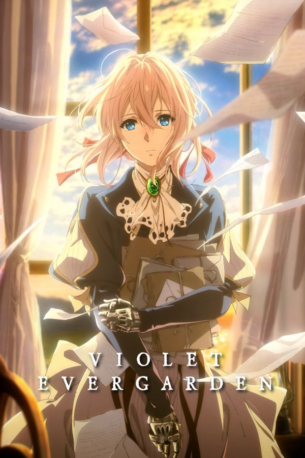

The story follows Violet Evergarden's journey of reintegrating back into society after the war is over as she is no longer a soldier, and her search for her life's purpose in order to understand the last words her mentor and guardian, Major Gilbert.
